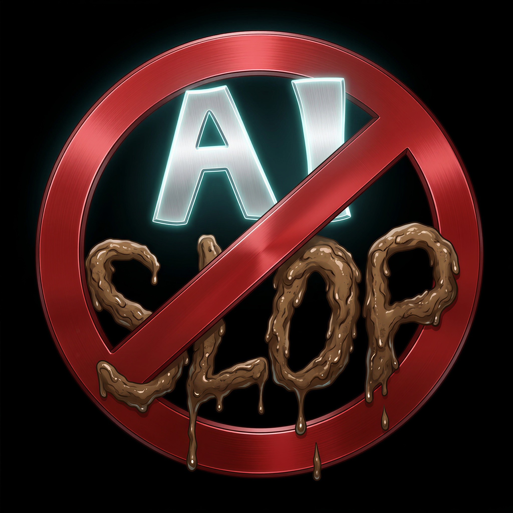

Antes que alguém pergunte por que usei IA para criar as imagens em vez de contratar um artista ou venha carimbar o projeto como "AI Slop", vale lembrar a escala do que estou construindo: são dezenas de heróis e incontáveis vilões (entre principais, secundários e minions), além de cenários, armas, habilidades e múltiplas variações de roupas, como versões de combate, casuais e evoluções de traje. Se eu fosse contratar um ilustrador para dar conta de tudo isso, precisaria ganhar na loteria primeiro, então a intenção nunca foi desvalorizar o trabalho de ninguém. Como criador independente, toda a história é de autoria própria, com a IA atuando apenas como ilustradora. Eu escrevi do zero a aparência de cada personagem, criando conceitos visuais inéditos ou reinterpretando referências existentes para transformá-las em algo totalmente único, como o próprio selo anti-IA ali de cima, que acabou ganhando uma bela evolução tecnológica.